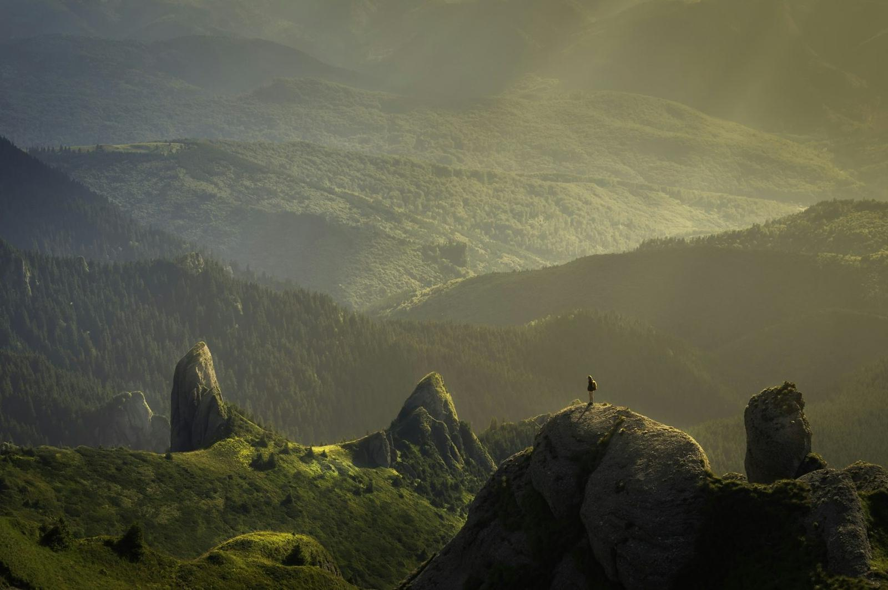

从苏黎世出发的火车开出半小时后，窗外的丘陵开始折叠，一层一层向上收，最后变成雪线。我在因特拉肯换乘齿轮火车，铁轨贴着山壁攀升，山谷在脚下一格一格退成地图。邻座的老人指着窗外说了一个德语地名，我听不懂，只好点头——后来我在相机里找到了他说的那个位置，是照片里最漂亮的那张。
阿尔卑斯的清晨是我见过最守时的东西。五点半起床，六点出门，天还是深蓝的，雪线以上先被染成很淡的铜色，然后云海从谷底慢慢涌上来，把视线填得满满的。我把相机架上三脚架，拍了几张就收起来了——那十几分钟里，看比拍更划算。空气冷得干净，吸进去像喝了一口冰凉的水。

第四天在马特洪峰下面的小湖等倒影。风一直不停，湖面碎了又合，合了又碎。我在石头上坐了整整二十分钟，直到风向转了一小阵，山把影子借给湖，只借了大概三分钟。快门声在那一刻显得很吵。旁边一位独自旅行的摄影者对我笑了一下，说了句"worth it"，我说"yes"，然后我们都把相机放下了。
高山旅馆的早餐总是很早，因为日出更早。第二天我五点四十下楼，发现窗边的位置已经坐满了人，大家都安静地等着，咖啡冒着气。老板娘端来一盘面包和自家做的果酱，用夹生的英语告诉我，这是她家果园的樱桃。那天早上我们聊了十几分钟，她说的很多词我都没听懂，但我们一直笑。
回程的火车上我想，阿尔卑斯教会我的其实是一件很小的事：把一天切成两半——日出前和日落前，中间的几个小时用来走路、吃饭、发呆。我原本带着一张写满"必去景点"的清单，最后只完成了不到一半，但我不觉得遗憾。